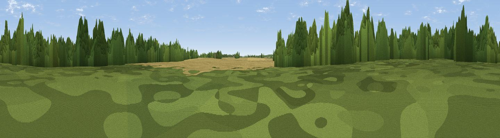

Viewpoint near Kirkby Underwood
#40638 in England · top 66% of its area beats it · near Kirkby UnderwoodThe view, rendered

A 360° render of this exact spot computed from the terrain model, tree cover and land cover — summer colours, afternoon light, calibrated against photographs of famous viewpoints. Real trees, hedges and buildings will differ in detail.
The panorama
Grey silhouette: terrain skyline in each direction (720 bearings, Earth curvature and refraction included). Dashed green: skyline with trees (+15 m) and buildings (+8 m) as obstacles. Blue strip: how far the ground is visible on each bearing.
Where the view opens
Wedge length = distance to the farthest visible ground on that bearing (vegetation-aware). Rings at 10, 25 and 50 km.
What fills the view
56% cropland · 34% woodland · 10% grassland ·
Angular shares of the visible panorama (visual magnitude), not map area. Landscape diversity 0.42 (0–1 Shannon).
Key numbers
More beautiful places nearby
The staircase of upgrades: each row has a higher view potential than everything closer. Driving times are estimates from straight-line distance, calibrated against real road routing — check an actual route before setting out.
| Place | Direction | Drive | Score |
|---|---|---|---|
| Viewpoint near Hanthorpe | SSE · 4 km | ~9 min | 35.1 |
| Viewpoint near Edenham | SSE · 5 km | ~12 min | 39.9 |
| Viewpoint near Toft | SSE · 11 km | ~21 min | 49.0 |
| Viewpoint near Belton | NW · 16 km | ~28 min | 51.0 |
| Viewpoint near Barrowby | WNW · 19 km | ~32 min | 53.5 |
| Viewpoint near Great Gonerby | NW · 19 km | ~33 min | 62.0 |
| Viewpoint near Belvoir | WNW · 24 km | ~39 min | 70.8 |
| Broombriggs Hill | WSW · 56 km | ~77 min | 74.4 |
52.83970, -0.43660 · source: osm peak · position refined by local search. Computed location — check access rights before visiting.